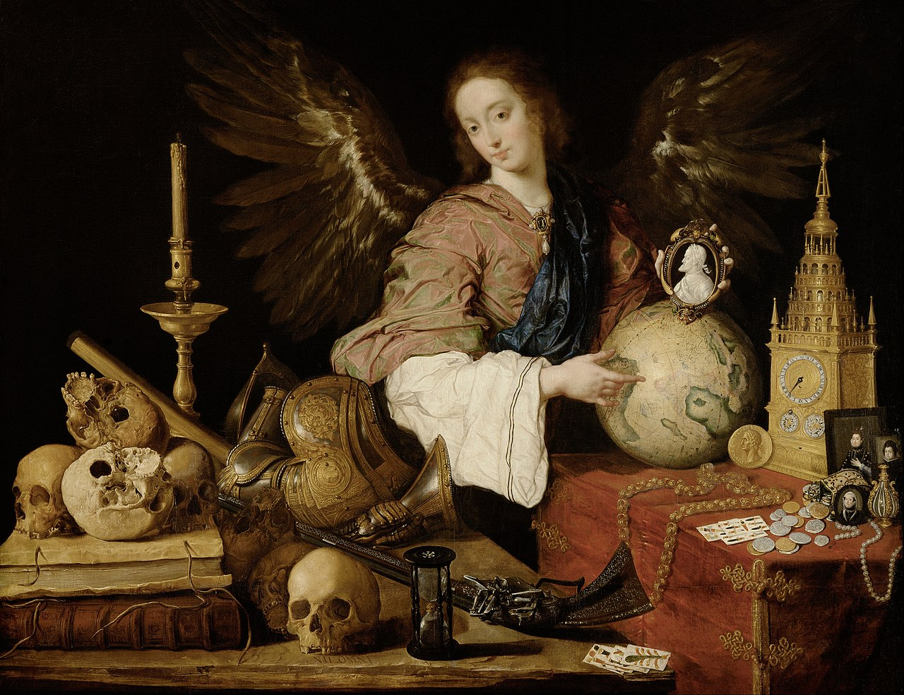
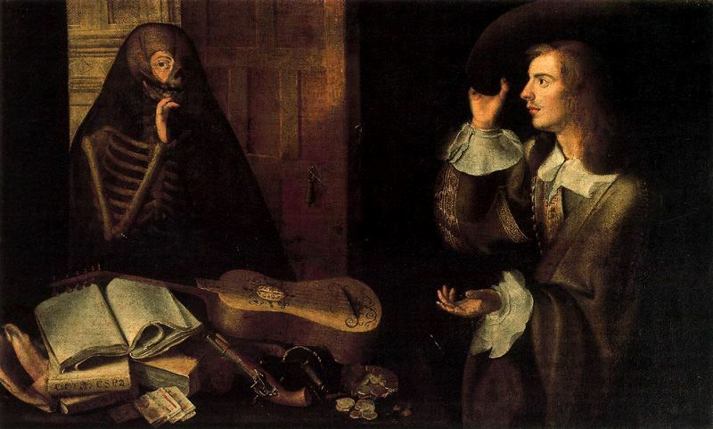
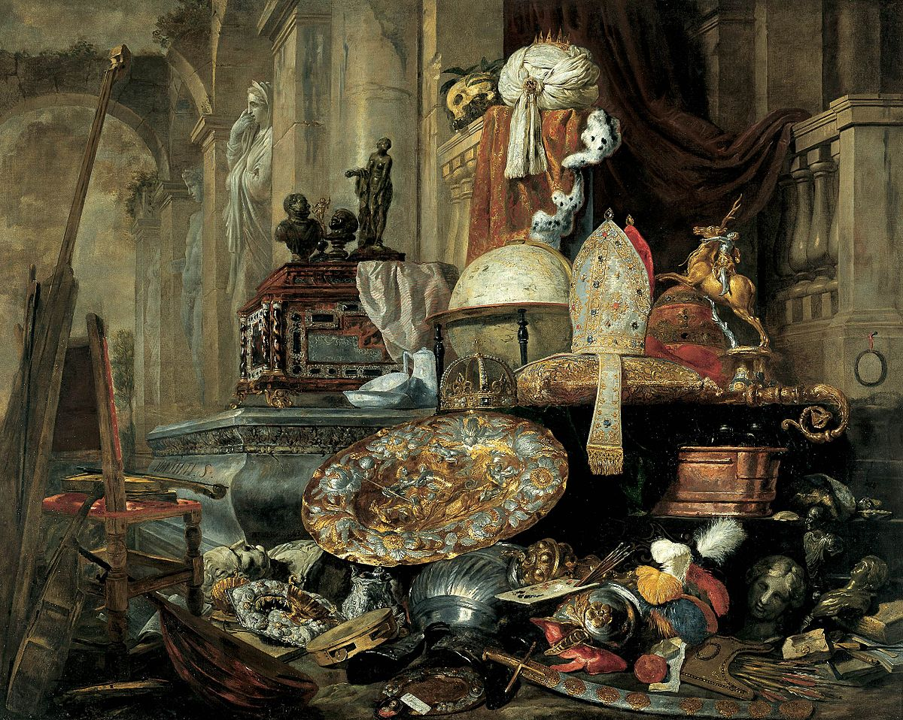
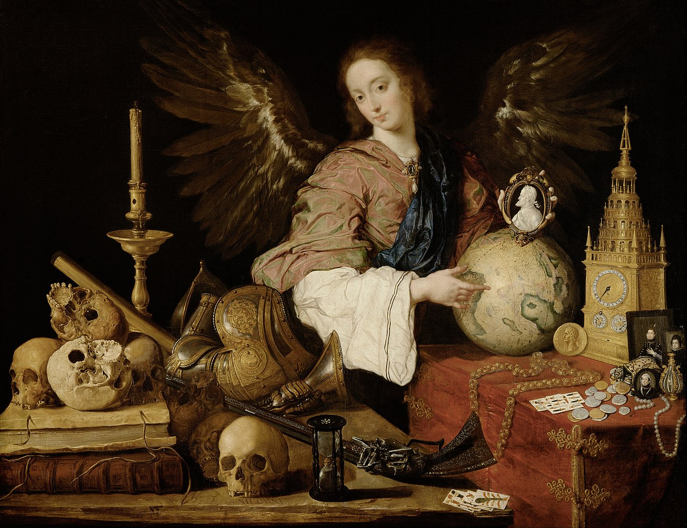
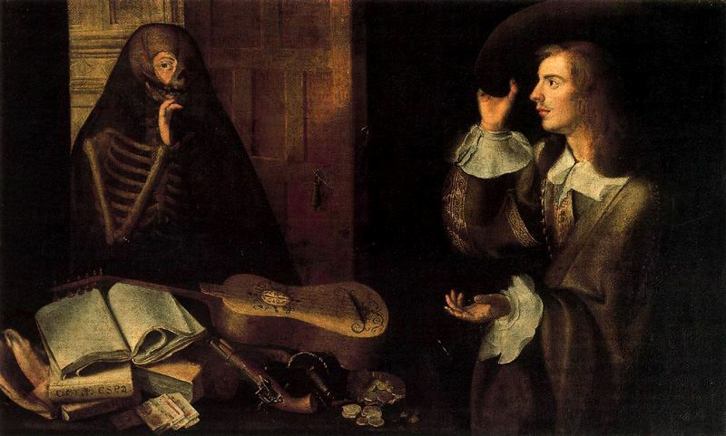
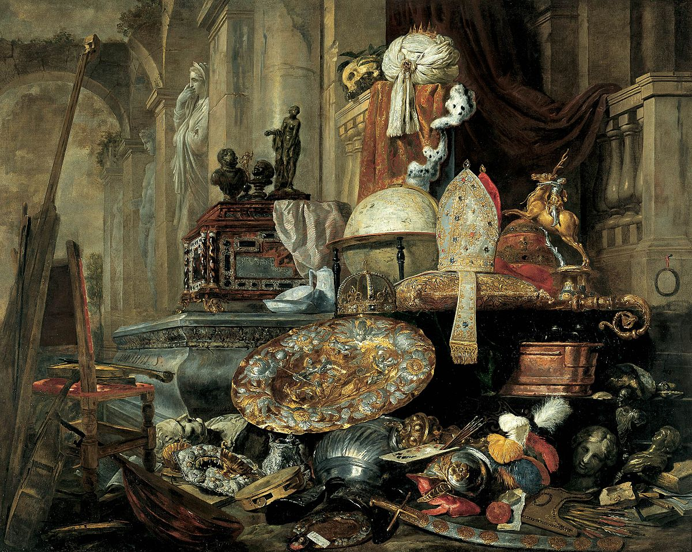
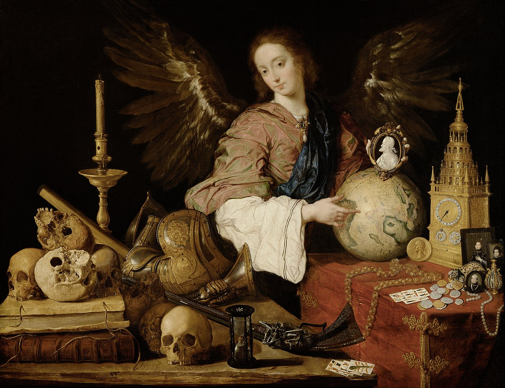
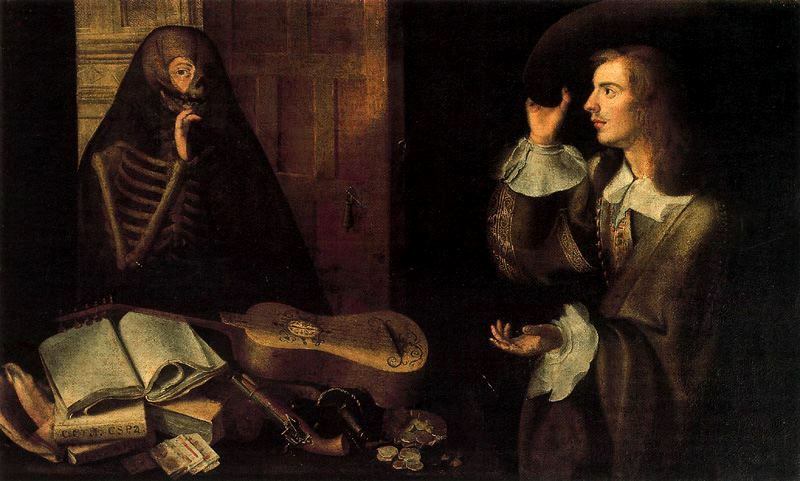
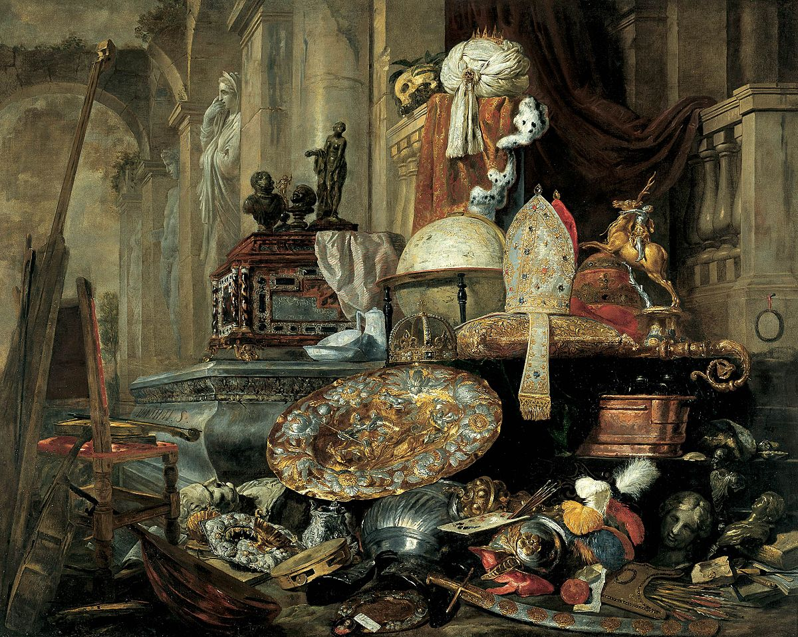
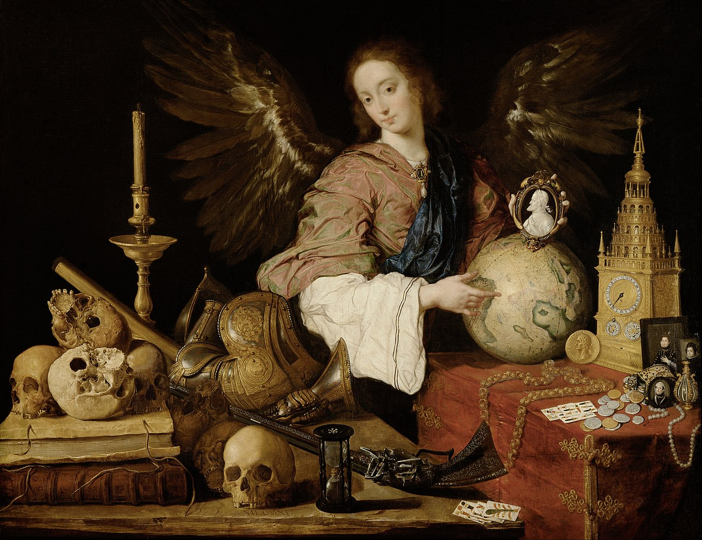
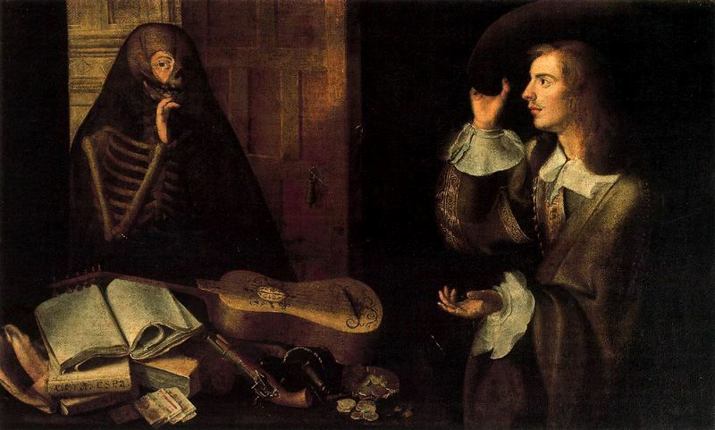
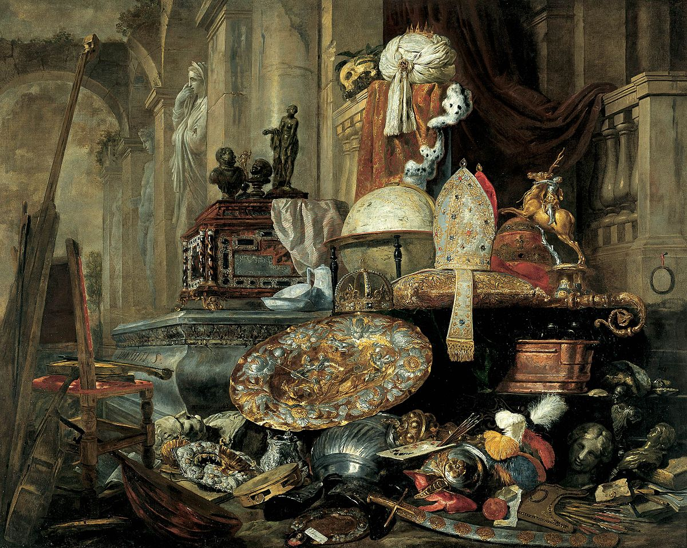
Vanitas este un gen al memento mori care simbolizează tranzitivitatea vieții, inutilitatea plăcerii și certitudinea morții și, prin urmare, vanitatea ambiției și a tuturor dorințelor lumești. Picturile implicau imagini de natură moartă ale unor obiecte trecătoare. Genul a început în secolul al XVI-lea și a continuat în secolul al XVII-lea. Arta Vanitas este un tip de artă alegorică reprezentând un ideal superior. A fost un subgen de pictură foarte utilizat de pictorii olandezi în perioada barocă (1585-1730). Pictorii spanioli care au lucrat la sfârșitul Secolului de Aur spaniol au creat, de asemenea, picturi Vanitas.
Cuvântul vanitas provine din latină și înseamnă vanitate. În acest context, vanitatea înseamnă lipsă de sens sau inutilitate, a nu se confunda cu cealaltă definiție a vanității. Vanitatea este menționată în Biblia ebraică în Ecleziastul 12:8, „Vanitatea vanităților, spune predicatorul, totul este vanitate”. În unele versiuni, deșertăciunea este tradusă prin „fără sens”, pentru a evita confuzia cu cealaltă definiție a deșertăciunii, care este mândria exagerată față de sine sau față de propria înfățișare. Mesajul este că acțiunea umană este temporară, iar credința este veșnică. Memento mori este o temă similară care, atunci când este tradusă din latină, înseamnă „amintește-ți că vei muri”.